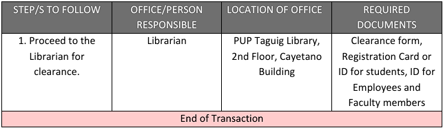
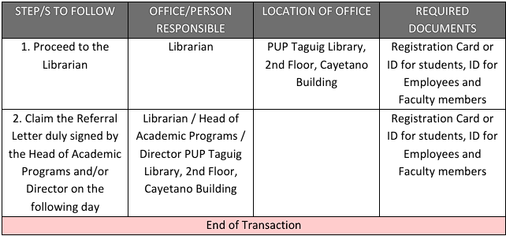

<div class="flex 
            flex-col 
            lg:flex-row 
            items-center 
            justify-center 
            min-h-screen">
  <div class="w-full 
              lg:w-1/2 
              p-6 
              lg:p-12 
              bg-white 
              rounded-xl 
              m-2">
    <div class="text-black 
                font-medium 
                space-y-6">
      <div class="flex 
                  flex-col 
                  items-center">
        
        <h1 class="text-center 
                   mt-5 
                   mb-10 
                   font-bold 
                   text-3xl 
                   slide-in-top">
          Library Services
        </h1>
        <div class="text-black 
                   font-medium 
                   text-start 
                   slide-in-left">
          <p>
            The heart of the university, the Library is one of the major 
            service centers of the Polytechnic University of the Philippines 
            Taguig Branch. As such, it strives to meet the academic and 
            related needsof its clientele through the provision of adequate 
            and efficient library and information services. The PUP Taguig 
            Library serves as the University’s gateway to the global 
            information society, and provides various services and development 
            of program to its clientele. For donation of books and other 
            library resources and other information and assistance, please see:
          </p>
          <div class="text-center mt-5 mb-1">
            <span class="text-primary">Librarian: </span
            ><span class="underline text-black">Elena C. Mamansag</span>
          </div>
          <div class="divider my-0"></div>
          <h2 class="text-start mb-3 mt-5 text-primary font-semibold text-2xl">
            Service Hours
          </h2>
          <div class="text-black font-medium text-start pb-2">
            <p>
              The Library is open from Monday to Friday from 8:00 AM to 8:00 PM.
              It is also open during Saturdays from 8:00 AM to 5:00 PM. Service
              stops fifteen (15) minutes before the regular closing time to
              enable the staff member to check records and the collection in
              preparation for the next day’s routine. Changes in service hours
              are posted in advance at the entrance of the library.
            </p>
          </div>
        </div>
      </div>
      <div class="flex flex-col items-start slide-in-right">
        <div class="divider my-0"></div>
        <h2 class="text-start mb-3 text-primary font-semibold text-2xl">
          Issuance of Library Clearance
        </h2>
        <p class="font-medium text-start">Description of the Service:</p>
        <span
          >The following are required to secure clearance from the Library.
        </span>
        <ol class="list-disc list-inside">
          <li>
            Faculty and administrative personnel who are applying for
            sick/vacation/ sabbatical leaves, resignation or retirement
          </li>
          <li>
            Students who are applying for graduation, honorable dismissal,
            returning students and the likes.
          </li>
        </ol>
        <div class="divider my-0"></div>
        <h2 class="text-start mb-1 text-black font-semibold text-xl">
          How to avail of the Service
        </h2>
        
        <div class="divider my-0"></div>
      </div>
      <div class="flex flex-col items-start slide-in-left">
        <h2 class="text-start mb-3 text-primary font-semibold text-2xl">
          Issuance of Referral Letter
        </h2>
        <p class="font-medium text-start">Description of the Service:</p>
        <span
          >Students and faculty members who shall be in need of materials not
          found in the PUP Taguig Library shall be referred to other libraries.
        </span>
        <div class="divider my-0"></div>
        <h2 class="text-start mb-1 text-black font-semibold text-xl">
          How to avail of the Service
        </h2>
        
      </div>
    </div>
  </div>
</div>
